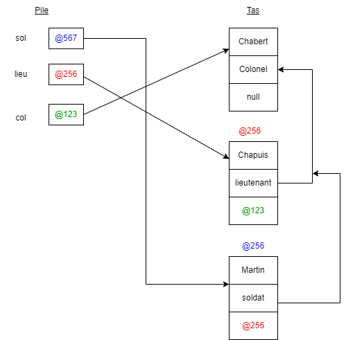

Aperçu du projet

Description du projet
Implémentation en Java de la Skytale, une ancienne méthode de chiffrement par transposition utilisée par les Spartiates. Le message est écrit sur une bande de cuir enroulée autour d'un bâton de diamètre spécifique, créant un chiffrement par permutation des caractères.
Ce projet combine histoire antique et programmation moderne, en recréant fidèlement le fonctionnement de cette technique millénaire dans une application Java moderne avec interface graphique.
Technologies utilisées
Fonctionnalités développées
- Chiffrement par transposition matricielle
- Déchiffrement avec clé (diamètre du bâton)
- Visualisation du processus d'enroulement
- Interface graphique pédagogique
- Gestion de différentes tailles de "bâtons"
- Mode démonstration historique
- Sauvegarde des messages chiffrés
Défis techniques rencontrés
- Algorithme : Modélisation mathématique de l'enroulement
- Matrices : Manipulation de tableaux 2D pour la transposition
- Visualisation : Représentation graphique du processus
- Conception : Architecture orientée objet avec UML
- Histoire : Respect de la méthode authentique
Compétences développées
Algorithmes avancés
Transposition, matrices, permutations
Conception UML
Modélisation, diagrammes de classes
Cryptographie historique
Méthodes antiques, analyse historique
Mathématiques
Géométrie, calculs matriciels
Aspect historique
La Skytale était utilisée par les éphores spartiates vers le Ve siècle av. J.-C. pour transmettre des messages secrets. Ce projet m'a permis de comprendre comment les anciens combinaient ingéniosité mathématique et contraintes physiques pour créer des systèmes de chiffrement efficaces.